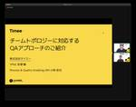

Timee Product Team Blog
https://tech.timee.co.jp/
タイミー開発者ブログ
フィード

JaSST'24 Tokyoに参加しました 1
1
Timee Product Team Blog
タイミーの矢尻、須貝、razです。 ソフトウェアテストに関する国内最大級のカンファレンス「JaSST (Japan Symposium on Software Testing) ‘24 Tokyo」が2024/03/14、15の2日間にわたって開催されました。 jasst.jp 登壇時の様子 今回は我らがGo AkazawaとYorimitsu Kobayashiも登壇！その応援も兼ねてQAコーチ、エンジニア、スクラムマスターの3名が参加。世界中で開催されるすべての技術系カンファレンスに無制限で参加できる「Kaigi Pass」という制度を利用しました。 productpr.timee.co.…
8日前
dbt exposureによるデータ基盤アウトプットの登録を自動化しました 15
Timee Product Team Blog
はじめに 課題感・背景 使用しているBIツールについて BIツールの使用ボリューム感について やったこと：概要 やったこと：詳細 referenced tableにテーブル名ではなくdbtモデル名が入るようにしたことについて 各種アウトプットの公開設定をmeta情報として付与する方針としたことについて tagを追加してexposureの検索性を向上させたこと exposureのnameにシートとダッシュボードのタイトルを反映する方針にしたこと 今後の発展 保守運用の設計 カラムレベルリネージュ ✖️ exposure おわりに We're Hiring!! はじめに こんにちは。okodooo…
10日前

タイミーでデータアナリストとして働いた1年を振り返る
Timee Product Team Blog
こんにちは！タイミーのデータアナリストの@yuyaです。 2020年にスマホゲームを運用する企業へ新卒入社をし、イベントプランナー兼データアナリストとして活動。2社目にECサイトを運用する企業でデータアナリストとして従事した後、2023年3月に3社目となるタイミーへ入社しました。入社からちょうど1年が経ったので、タイミーでのデータアナリストとしての働き方をこれまで自分が所属した企業と比較して、どうだったかについて振り返りたいと思います。 タイミーでの役割 まずは、私がタイミーでどのような役割を担っているデータアナリストなのかを記載したいと思います。 タイミーのデータアナリストチームは、大きく以…
1ヶ月前
【イベントレポート】チーム分割においていかれたアラートをチームで責任を持てる形に再設計した
Timee Product Team Blog
イベント概要 2023年12月5日に「Next Year Con for SRE〜来年の登壇を応援する勉強会〜」と題してSREに関するトピックでタイミー、ココナラ、ビットキー、マジックモーメントの4社合同で勉強会を開催しました。 その中でタイミーバックエンドエンジニアの岡野さん（@Juju_62q）の講演をイベントレポートにまとめてお届けします。 チーム分割においていかれたアラートをチームで責任を持てる形に再設計した 自己紹介＆想定聴衆 2020年にタイミーに入社し、現在では3年半ほどエンジニアをしている岡野と申します。 主にストリームアラインドチームの機能開発を担当しており、その一方でサイト…
1ヶ月前
【イベントレポート】YAPC::Hiroshima 2024に参加しました
Timee Product Team Blog
はじめに こんにちは、タイミーでバックエンドエンジニアをしている新谷、須貝、難波です。 2月10日に広島国際会議場で YAPC::Hiroshima 2024 が開催されました。タイミーはGold Sponsorとしてブース出展をしており、エンジニアが3名とDevEnable室が3名の総勢6名で参加させていただきました。 どのセッションも興味深かったのですが、この記事では我々が拝見したセッションのうち特に印象に残ったものをいくつかピックアップしてご紹介します。 なお、タイミーには世界中で開催されている全ての技術カンファレンスに無制限で参加できる「Kaigi Pass」という制度があり、エンジニ…
1ヶ月前
【イベントレポート】Railsアプリで秘匿情報を環境変数からCredentialsに移行した話
Timee Product Team Blog
イベント概要 2023年11月15日に「GENBA #1 〜RubyとRails開発の現場〜」と題してRuby/Railsでの開発に関するトピックでタイミーとエンペイ社合同で勉強会を開催しました。 その中でタイミーバックエンドエンジニアのpokohideさん（@pokohide）の発表「Railsアプリで秘匿情報を環境変数からCredentialsに移行した話」をイベントレポート形式でお届けします。 登壇者紹介 Credentialsとは Credentials は、Rails 5.2から追加された秘匿情報を管理するための仕組み※1 で、Rails 6から複数の環境をサポート※2 しています。…
1ヶ月前
【イベントレポート】「Railsアプリと型検査」
Timee Product Team Blog
イベント概要 2023年11月15日に「GENBA #1 〜RubyとRails開発の現場〜」と題してRuby/Railsでの開発に関するトピックでタイミーとエンペイ社合同で勉強会を開催しました。 その中でタイミーバックエンドエンジニアの正徳さん a.k.a 神速さん（@sinsoku_listy）の発表「Railsアプリと型検査」をイベントレポート形式でお届けします。 登壇者情報 Railsアプリと型検査 RBSの基本 RBSとは RBS（Ruby Signature）は、Ruby 3.0から導入された言語機能で、Rubyのコードに型情報を追加し、型検査と入力補完を可能にするための言語です。…
2ヶ月前
Rails の Service クラスの運用を CustomCop で厳格にする
Timee Product Team Blog
タイミーでバックエンドエンジニアをしている新谷 id:euglena1215 です。 今回は社内で決めたコーディングルールに強制力を持たせるために CustomCop を作った話を紹介します。 背景 タイミーの Rails アプリケーションには /app/services ディレクトリがあり、 Service クラスが存在しています。 これまで社内で Service クラスは、なるべく使わない方が好ましいものの、どんな時に使っていいかは特段明言されていない状況でした。 その結果かは分かりませんが、一部の機能では Service クラスを多用し Service クラスが Service クラスを…
2ヶ月前
仕事と育児と、それから社会人大学院
Timee Product Team Blog
はじめに 私自身の事例 日々の学習・研究時間の確保 育児との折り合い パートナーや家族のサポートの重要性 日々の学習や研究の効率化 効率的な勉強法や研究の進め方の文献 社会人の特権のツールへの投資 ストレス管理と心の健康 タイミーという最適な環境 育児への支援制度 自己研鑽への支援制度 DSグループでの働き方 まとめ はじめに こんにちは、株式会社タイミーのデータエンジニアリング部データサイエンス（DS）グループ所属の貝出です。 私は現在タイミーで働きながら、育児しつつ、社会人大学院（修士）に通っています。今回のブログでは、仕事・育児・社会人大学院をどう調整して進めていくかについて書いていきた…
2ヶ月前
タイミーのデータアナリストの一日
Timee Product Team Blog
自己紹介 部署紹介 一日の流れ 朝のルーチン: 午前中の仕事: 9:00~11:00 フォーカス課題の分析 11:00~11:30 データアナリスト全体のデイリーミーティング 11:30~12:00 他のメンバーのクエリレビュー 昼休憩: 午後の仕事: 13:00~13:30 依頼タスクのヒアリング 13:30~14:30 依頼タスクの対応、納品 14:30~16:30 フォーカス課題の分析 16:30~17:00 定例ミーティング（部署連携の持続PJT） 17:00~18:00 採用面接 18時から中抜け（あるいはそのまま退勤）: 20~21時以後: 20:00~20:30 面接の議事録完成…
2ヶ月前
Regional Scrum Gathering Tokyo 2024に参加しました（エンジニア編）
Timee Product Team Blog
タイミーのyama_sitter、須貝、小林です。 国内最大級のアジャイル、スクラム関連のイベント「Regional Scrum Gathering Tokyo 2024（RSGT2024）」 が1/10〜1/12の3日間にわたって開催されました。 2024.scrumgatheringtokyo.org タイミーには世界中で開催されるすべての技術系カンファレンスに無制限で参加できる「Kaigi Pass」という制度があります。 productpr.timee.co.jp こちらの制度を利用して今年はスクラムマスター3名、エンジニア3名が参加してきました。 前編に続き、後編の今回はエンジニア3…
2ヶ月前
Regional Scrum Gathering Tokyo 2024に参加しました（スクラムマスター編）
Timee Product Team Blog
タイミーのmaho、ShinoP、りっきーです。 国内最大級のアジャイル、スクラム関連のイベント「Regional Scrum Gathering Tokyo 2024（RSGT2024）」 が1/10〜1/12の3日間にわたって開催されました。 2024.scrumgatheringtokyo.org タイミーには世界中で開催されるすべての技術系カンファレンスに無制限で参加できる「Kaigi Pass」という制度があります。 productpr.timee.co.jp こちらの制度を利用して今年はスクラムマスター3名、エンジニア3名が参加してきました。 その参加レポートとして印象に残ったセッ…
2ヶ月前
社内版 Rails アップグレードガイドを公開します
Timee Product Team Blog
こちらはTimee Advent Calendar 2023 シリーズ1の25日目の記事になります。 昨日は @tomoyuki_HAYAKAWA による Swift Concurrency AsyncStreamを使ってみる #Swift - Qiita でした。 タイミーでバックエンドエンジニアをしている id:euglena1215 です。 メリークリスマス🎄 みなさんの手元にはプレゼントは届いているでしょうか。 Ruby の世界では Ruby コミッターサンタさんがクリスマスプレゼントとして新しい Ruby バージョンをリリースしてくれます。 今年は Ruby 3.3 ですね。個人的に…
3ヶ月前
静かなSquadの進化: エンゲージメントが高まるきっかけ
Timee Product Team Blog
こんにちは！株式会社タイミーでプロダクトマネージャーをしているAndrewです。 私はオフショアメンバーが関与するSquadに所属しています。このSquadはエンジニア組織の中でもユニークな環境であり、ここで直面した問題とそれを乗り越えるための取り組みをこの記事で紹介したいと考えています。 オフショアメンバーとのコラボレーションの課題 約半年前、オフショアメンバーのいるSquadと関わり始め、このSquadの各メンバーを知るきっかけとなりました。 最初は、日本メンバーとオフショアメンバーのコミュニケーションがスムーズでないと感じました。ミーティングでは通訳担当の方以外、オフショアメンバー全員が…
3ヶ月前
FirebaseAppDistributionをBitriseで導入してみた
Timee Product Team Blog
こちらはTimee Advent Calendar 2023シリーズ1の19日目の記事です。 はじめに こんにちは、タイミーでAndroidエンジニアをしているsyam(@arus4869)です。 この記事では、タイミーで実際に利用しているBitriseとFirebase App Distributionを用いたAndroidアプリの配布方法を実例を交えながら紹介していこうと思います。 この記事を通じて、同じようなツールを利用している他の開発者の皆さんにとって、参考になる情報を提供できればと思います。 BitriseとFirebase App Distributionについて Bitriseは…
3ヶ月前
全社的なデータ活用の取り組みをお話しします
Timee Product Team Blog
こんにちは、データ統括部BIグループ所属のtakahideです。 本記事では、BIグループで取り組んでいる全社的なデータ活用に関してご紹介します。 この記事を通して、少しでも「社内のデータ活用を進めたい」と思っている方のお役に立てたら幸いです。 ※Timee Advent Calendar2023の12月18日分の記事です。 課題感 データ活用に役立つスキル 講習会の開催 少人数の相談会 データ活用スキルの指標化 おわりに We’re Hiring! 課題感 まずは、データ活用を進めるに至った経緯を簡単に説明させてください。 タイミーは、データを用いた意思決定を大切にしているのですが、 近年の…
3ヶ月前
RailsフロントエンドをNext.js(SPA)に移行した〜バックエンド視点での振り返り〜
Timee Product Team Blog
好きな水風呂の温度は16℃でお馴染み edy2xx です。 Timee Advent Calendar 2023 の16日目を担当します。 本記事では今年完遂したUIリニューアル（SPA化）を通してタイミーで実施した工夫や学びを普段バックエンドの開発を担当する私の視点からお伝えします。 先日のイベントでの登壇内容を補完した内容となっています。気になる方は下記資料もご覧ください。 speakerdeck.com イベントの方はプロジェクト終盤での断捨離やリファクタリングなどがテーマになっていたので本記事ではプロジェクト進行過程全般での知見をシェアしていきます。 プロジェクト概要 まずプロジェクト…
3ヶ月前
タイミーAndroidChapter式LADRを導入してみた
Timee Product Team Blog
こちらはTimee Advent Calendar 2023シリーズ1の15日目の記事になります。 こんにちは、タイミーでAndroidエンジニアとして働いている @orerus こと村田です。 私は現在タイミーのAndroidChapter（弊社は特定領域のメンバーの集まりのことをChapterと呼称しています）の一員で、喜ばしいことに来年早々にメンバーが大きく増加する予定です・・・！ 以前はAndroidChapterのメンバーが全員同じチームで開発を行っていましたが、タイミーのエンジニア組織拡大に伴い全員が異なる開発チーム（弊社ではSquadと呼称しています）に所属する形へと変化しました…
3ヶ月前
dbt jobの分割方針について考えてみた
Timee Product Team Blog
※Timeeのカレンダー | Advent Calendar 2023 - Qiitaの12月13日分の記事です。 はじめに こんにちは okodoooooonです dbtユーザーの皆さん。dbtモデルのbuild、どうやって分割して実行してますか？ 何かしらの方針に従って分割をすることなく、毎回全件ビルドをするような運用方針だと使い勝手が悪かったりするんじゃないかなあと思います。 現在進行中のdbtのもろもろの環境をいい感じにするプロジェクトの中で、Jobの分割実行について考える機会があったので、現状考えている設計と思考を公開します！（弊社は一般的なレイヤー設計に従っている方だと思うのでJo…
3ヶ月前
ML基盤を再構築したはなし
Timee Product Team Blog
こんにちは、タイミーのデータ統括部、DRE（Data Reliability Engineer）グループ & DS（Data Science）グループ所属の筑紫です。 DSグループではML基盤の構築・運用保守を担当しています。 本記事では、ML基盤を再構築した話を紹介したいと思います。 ※Timee Advent Calendar2023のシリーズ 2の12月13日分の記事です。 経緯と課題 DSグループでは、様々なプロジェクトのML基盤を構築しています。 当初は、1つのCloud Composerの上に、全てのpipelineを載せて運用していました。 以下に当初の構成のイメージ図を示します…
3ヶ月前
今後の機能開発を快適にするために検索機能をリファクタリングした
Timee Product Team Blog
こちらはTimee Advent Calendar 2023の13日目の記事です。 タイミーでバックエンドエンジニアをしている @Juju_62q です。 記事内でワーカーさんや事業者さんに関して敬称を省略させていただきます。 タイミーは雇用者である事業者に求人を投稿してもらい、労働者であるワーカーが求人を選ぶという形でマッチングを実現しています。ワーカーが求人を選ぶためにはなんらかの形でワーカーが自分にあった求人を見つけられる必要があります。検索はワーカーが求人を見つけるために最もよく使われる経路です。今回はそんな検索機能において今後の開発をスムーズにするためのリファクタリングを実施した話を…
4ヶ月前
dbtに関連する運用の自動化
Timee Product Team Blog
この記事は Timee Advent Calendar 2023 シリーズ 3 の12日目の記事です。 qiita.com はじめに DREグループでデータエンジニアをやっている西山です。 今回は、データ転送まわりの運用自動化について書きます。 タイミーのアプリログが分析できる状態になるまでのリードタイムが長く、効果検証や意思決定に遅れが出ていた問題に対して、dbtに関連する運用を自動化することで改善しました。 タイミーでのアプリログの転送について タイミーではS3に貯まったサーバーログを定期的にデータ基盤(GCPのBigQuery)へ転送しており、ログがLake層へ追加されるとdbt(dat…
4ヶ月前
定例会議の議事録をNotion DBで構造化して、いい感じにした話
Timee Product Team Blog
この記事は "Timee Advent Calendar 2023" の11日目の記事です。 qiita.com こんにちは、タイミーのデータ統括部データサイエンス（以下DS）グループ所属の菊地です。 今回は、定例会議の議事録をNotion DBで構造化して、いい感じにした話を紹介したいと思います！ 前提 タイミーでは社内ドキュメントツールとしてNotionを採用しており、私が担当しているプロジェクトで週1回開催される定例では、議事録をNotion DBとして管理しています。当初は以下のような定例議事録用テンプレートを作成して運用していました。 定例の内容としては、プロジェクト進行上同期的に議…
4ヶ月前
インシデントコマンダーになる前に経験したこと 〜 システム障害が起きて、それからどうする？
Timee Product Team Blog
この記事は Timee Advent Calendar 2023 シリーズ 2 の10日目の記事です。 qiita.com こんにちは！ @lucky_pool です。 タイミーでプロダクトマネージャーをしています。 はじめに 何らかのシステム障害が起こったとき、サービスを利用するあらゆる人に影響が出て、普段通りにサービスを利用できなくなってしまいます。そんな状況になった際、 “なんとかする” しかありません。 私はプロダクトマネージャーという役割で働いていますが、サービスのコード修正をすることや、データ変更のオペレーションをすることはありません。また、過去や新規に開発された機能や仕様をすべて…
4ヶ月前
BigQueryにおけるdbtの増分更新についてまとめてみた
Timee Product Team Blog
はじめに ※Timeeのカレンダー | Advent Calendar 2023 - Qiitaの12月8日分の記事です。 okodooooooonです BigQueryの料金爆発。怖いですよね。 dbtでの開発が進んでたくさんのモデルを作るようになると、デイリーのビルドだけでも凄まじいお金が消えていったりします（僕はもう現職で数え切れないくらいやらかしてます）。 コストの対策として「パーティショニング」「クラスタリング」などが挙げられますが、今回は「増分更新」の観点で話せたらと思います。 「dbtのmaterialized=’incremental’って増分更新できておしゃれでかっこよくてコ…
4ヶ月前
RecBoleでサクッとレコメンドアルゴリズムの検証をしてみた
Timee Product Team Blog
こんにちは、データ統括部データサイエンス（以下DS）グループ所属の小関 (@ozeshun)です。 本記事では、タイミーで取り組んでいるレコメンドに使用するアルゴリズムを検証する際に活用した、RecBoleでの実験方法について紹介したいと思います。 ※Timee Advent Calendar2023の12月8日分の記事です。 RecBoleとは RecBoleを活用したアルゴリズムの実験手順 0. ディレクトリ構成 1. 学習データの準備とRecBoleで使用するconfig fileの用意 2. 学習データをAtomic file *3 へ変換 3. モデルの学習 4. 学習したモデルの検…
4ヶ月前
メンバーの相互理解を深めるためにDSグループでやっていること
Timee Product Team Blog
この記事はTimee Advent Calendar 2023の7日目の記事です。 qiita.com こんにちは、データ統括部データサイエンス（以下DS）グループ所属の小栗です。 本記事では、メンバーの相互理解を深めるためにDSグループで取り組んでいる施策を紹介します。 そもそもの課題感 以下の要素により、DSメンバー間の相互理解が今後難しくなりそう…という課題感が当時あり、諸々の施策をスタートさせました。 フルリモート前提の働き方をしている チームメンバーの数がすごい勢いで増えてきた（1年で2.5倍に） メンバーがそれぞれ担当する部署横断PJがいくつも並行に走っており、逆にチーム内での接点…
4ヶ月前
terraformでPRごとにテスト環境を用意する
Timee Product Team Blog
この記事はTimee Advent Calendar 2023シリーズ 2の5日目の記事です。 はじめに DREグループの石井です。 今回はDREグループの管理するデータ基盤に関するインフラのterraformのテスト環境の話をしようと思います。 導入前の課題感 我々のチームではデータ基盤として複数のGCP Projectを管理していますが、その全てをterraformで管理しています。 この時点でGithubActionsによる自動テスト(validate, plan) 及び 自動デプロイは導入されていたため、レビューさえ通れば誰でもインフラの変更を反映できる状態になっています。 しかし、こ…
4ヶ月前
障害発生時間をFactから改善する取り組みをアップデートした話
Timee Product Team Blog
こんにちは、CTO室グループでQAスペシャリストを担っている依光です。 今年を振り返ってという視点から、施策として動き始めた「障害対応をFactから改善する取り組み」について紹介させてください。 今までの取り組みと課題 タイミーのプロダクト部ではFour Keysを活用して改善サイクルに取り組んでおり、 プロダクトの品質を改善するという側面から「変更失敗率」と「サービス復元時間」を 計測しています。 この「サービス復元時間」を短縮するに当たり、障害を時系列にまとめて事後検証として 振り返るポストモーテムだけでは、改善するポイントを客観的に判断することが難しい という課題がありました。 取り入れ…
4ヶ月前
Railsアップグレードを楽にする取り組み 〜社内向け管理画面編〜
Timee Product Team Blog
こちらはTimee Advent Calendar 2023シリーズ1の5日目の記事になります。 昨日は @redshoga による Vercel REST APIを用いたステージング環境反映botについて で明日は @yama_sitter による フロントエンドアプリケーションの認知負荷とテスタビリティに立ち向かう です。 タイミーでバックエンドエンジニアをしている id:euglena1215 です。 タイミーはユーザー向け・企業向け・社内向けの機能を1つの Rails アプリケーション上で動かしています。 10/5に Rails 7.1 がリリースされ、タイミーも11/1に 7.1.1…
4ヶ月前